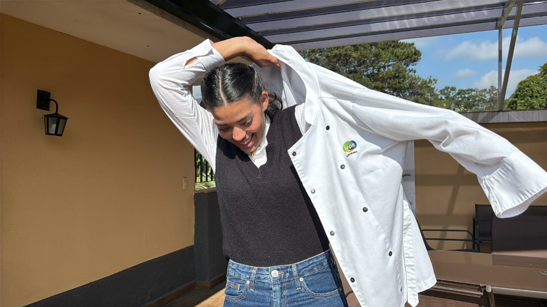
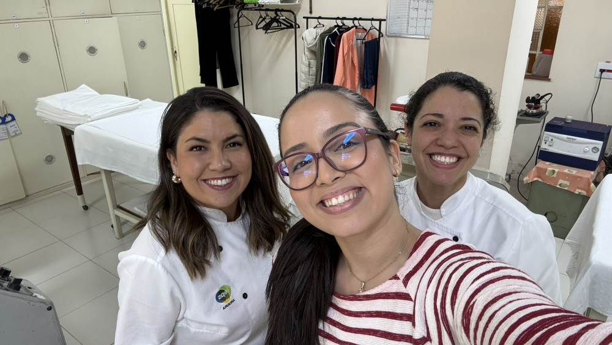
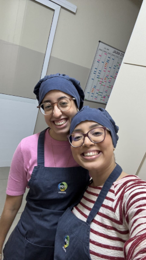
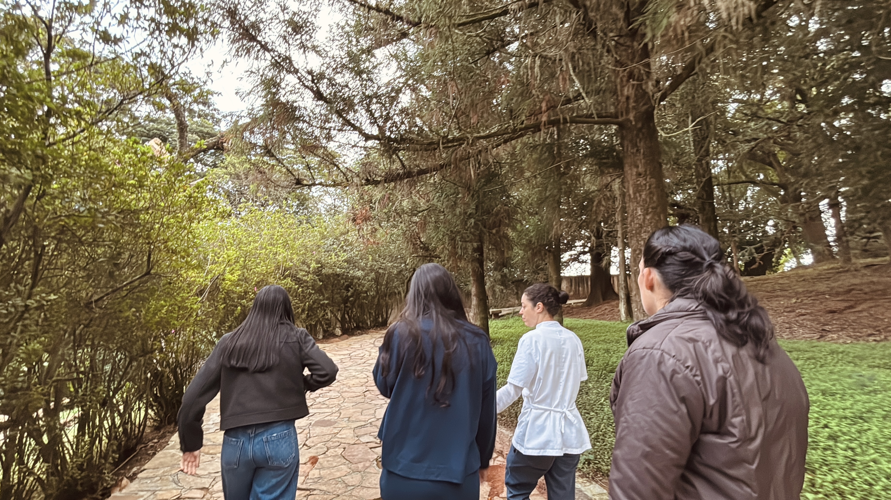
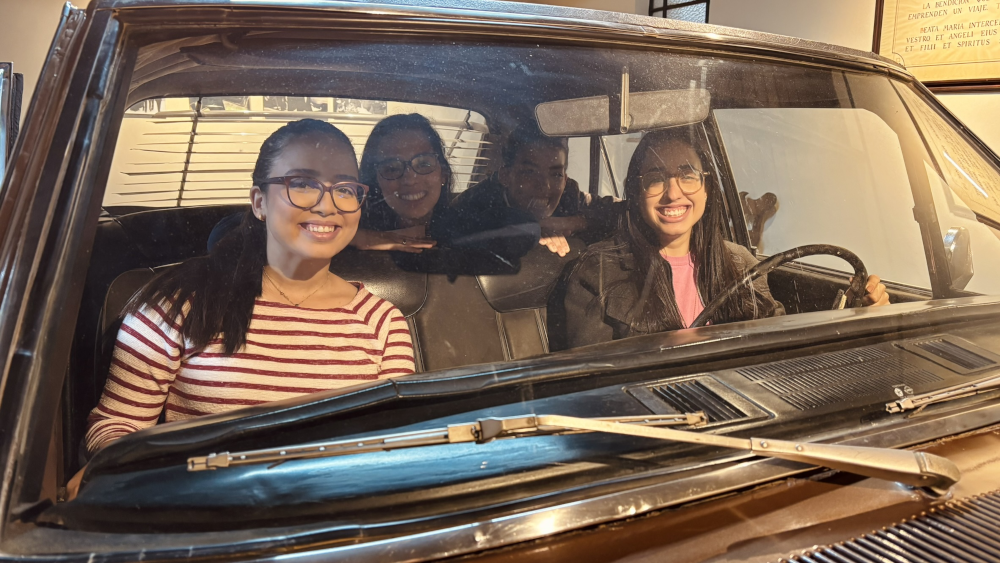
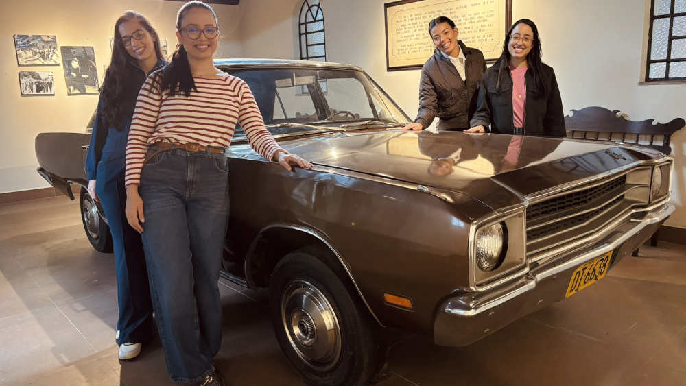
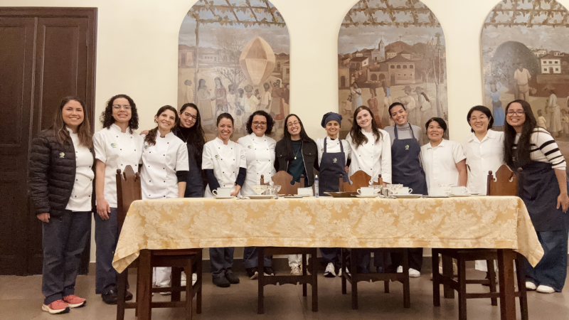

Fazer do mundo
um lar
Quero me inscrever
O que é o Projeto Dora?
O Projeto Dora consiste em passar um final de semana no centro do Opus Dei para vivenciar o dia a dia de uma numerária auxiliar e entender melhor o espírito do Opus Dei.
O projeto se chama Dora, pois esse era o nome da primeira numerária auxiliar do Opus Dei.
Momentos do Dora






Inscreva-se
A inscrição não garante a vaga. Será feita uma entrevista prévia.